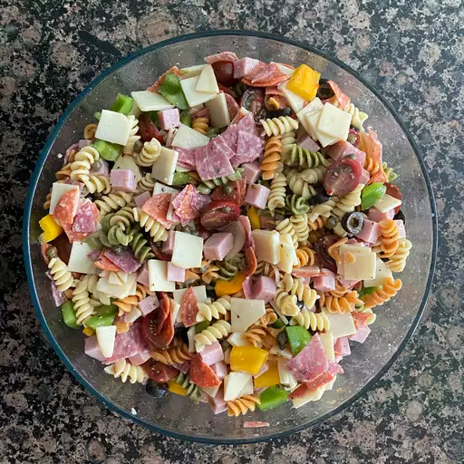

Awesome Pasta Salad

Description
Pasta salad is a salad dish prepared with one or more types of pasta, almost always chilled, and most often
tossed in a vinegar, oil or mayonnaise-based dressing. It is typically served as an appetizer, side dish or
a main course
Ingredients
- 1 (16 ounce) package fusilli (spiral) pasta
- 3 cups cherry tomatoes, halved
- 1/2 pound provolone cheese, cubed
- 1/2 pound salimi, cubed
- 1/4 pound sliced pepperoni, cut in half
- 1 large green bell pepper, cut into 1 inch pieces
- 1 (10 ounce) can black olives, drained
- 1 (4 ounce) jar pimentos, drained
- 1 (8 ounce) bottle Italian salad dressing
Steps:-
- Gather all ingredients
- Bring a large pot of lightly salted water to a boil. Cook fusilli in the boiling water, stirring
occasionally, until tender yet firm to the bite, about 12 minutes. Drain.
- Combine fusilli with tomatoes, cheese,salami,pepperoni, green pepper, olives, and pimentos in a
large
bowl. Pour in salad dressing; toss to coat.
- Enjoy!